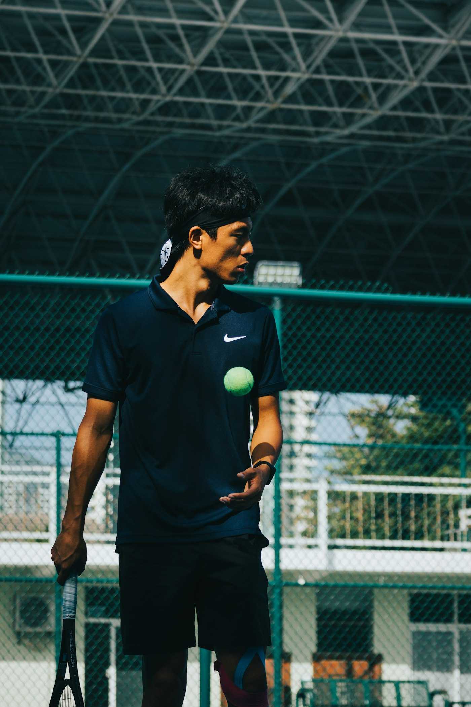
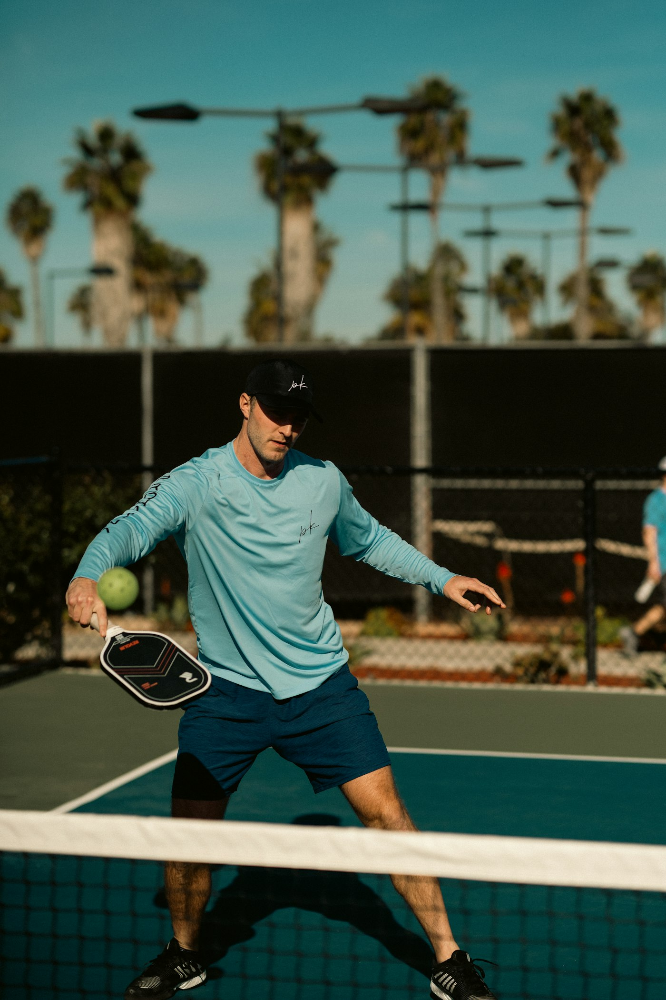
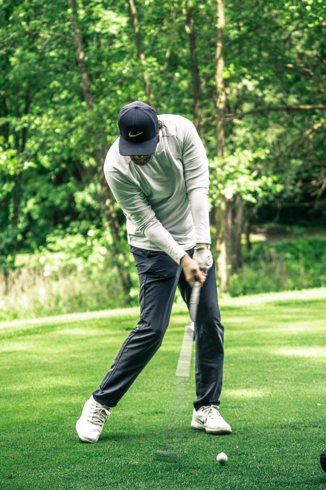

Your AI coach
After each session, Kinesis Coach goes through the data from your equipment and tells you what to work on next. It also picks up habits you might not notice yourself.
Spots bad habits
Things like a dropping elbow or a late wrist show up in the data well before you or your coach would notice them.
Tracks fatigue
Shows the point in a session where your technique starts to slip because you are getting tired.
Compares you with yourself
Every rep is scored against your own best reps, so the targets are realistic for you.
Gives you drills
You get one thing to fix per session and a drill for it. The app tracks your progress week by week.



Everything in one app
Every Kinesis product you own shows up in the app. Tap on one to see its sessions and technique data.
Pick a plan
Basic tracking is free with every product. The AI coach is a paid subscription, and the first 3 months are free when you buy any product with sensors.